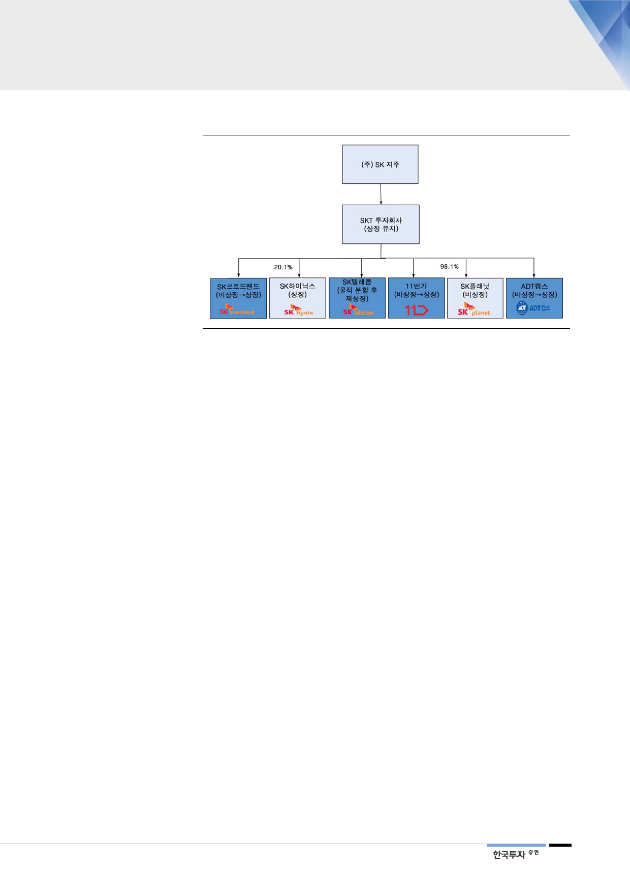

[그림 17] 자회사 상장 후
기업가치를 높이기 위해
자회사 상장 추진 예상
자료: SKT, 한국투자증권
SK텔레콤은 지배구조 변경 후 잔존 투자회사의 주주가치를 높이기 위해 자회사
상장을 추진할 것으로 보인다. 물적 분할된 이동통신 사업자 SK텔레콤은 다시
상장될 것으로 예상된다. 2015년에 상장 폐지된 IPTV, 초고속인터넷 업체인 SK
브로드밴드도 재상장될 전망이다. 10월에 인수한 보안업체 ADT캡스와 최근 분
사한 11번가도 상장 예상업체다. 이들 비상장 자회사가 상장되면서 시장 평가 가
치가 올라가면 SKT 투자회사도 valuation이 높아질 것이다.
15